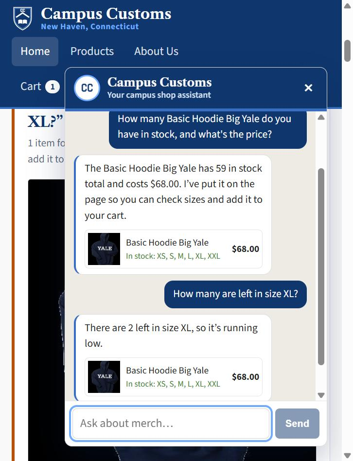
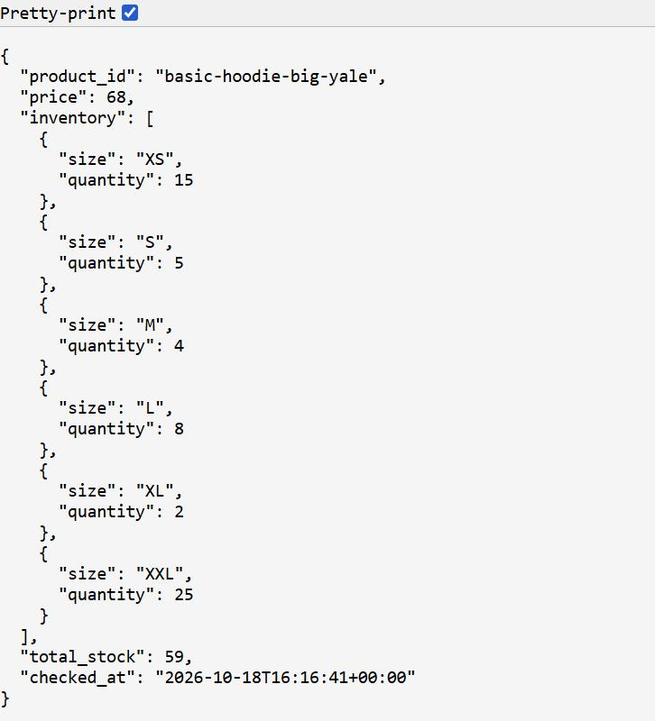
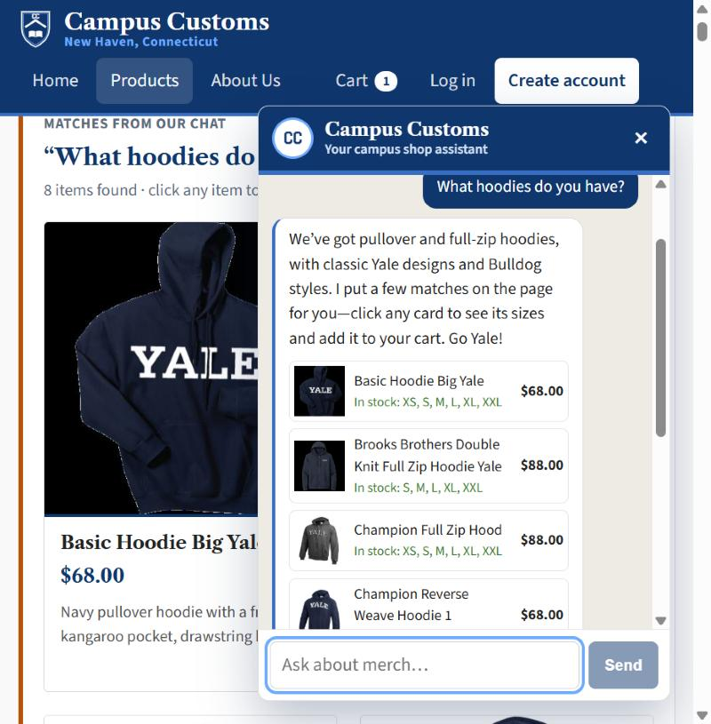
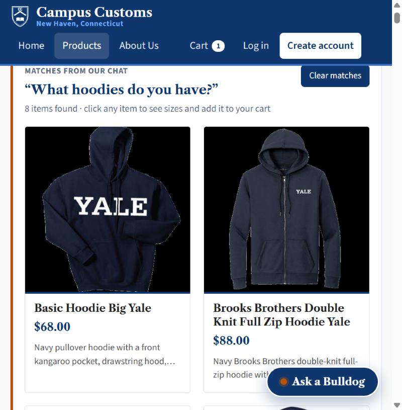
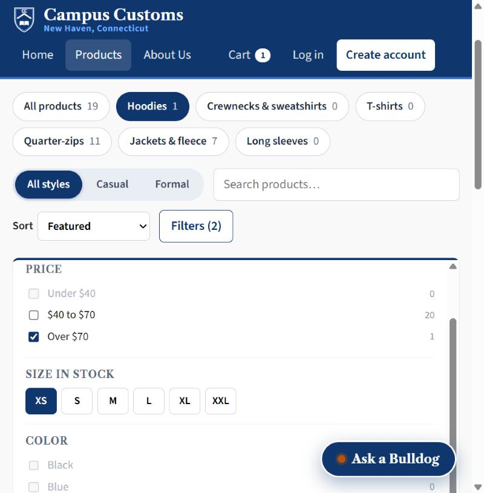
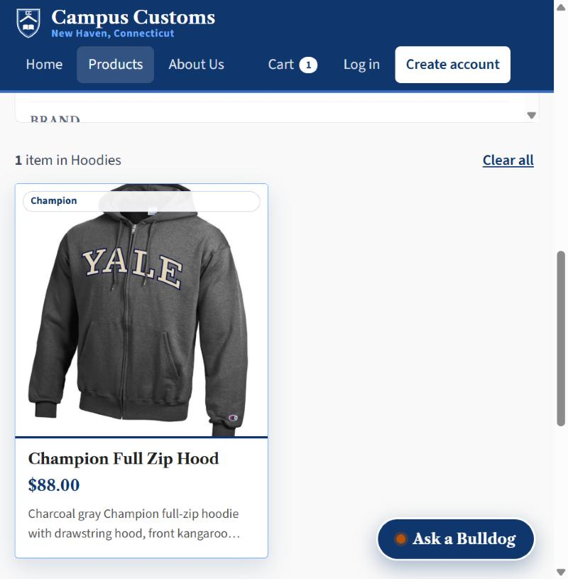

| Check | Result | Screenshots |
|---|---|---|
| 1. Chat checks an item's inventory level | Pass. Chat stock and price match the database. | inventory.png, inventory_database.png |
| 2. Search-result cards after a category question | Pass after a fix. The test found a bug, which was fixed and retested. | search_cards_chat.png, search_cards.png |
| 3. Problem 9 usability feature: faceted search | Pass. Filters narrow the products and the counts update. | usability_filters.png, usability_filters_result.png |


Check 1: Chat checks an item's inventory level
Pass

- What the screenshots show
- A shopper asks the chat about the Basic Hoodie Big Yale and it answers 59 in stock at $68.00 with 2 left in XL, the same numbers the database shows (price 68, XL quantity 2, total stock 59).
- What it proves
- The chat reports honest stock and price, by size, read from the database through its stock tool rather than made up, and the automatic fact check logged both replies as passed (backend/logs/checks.jsonl).
Check 2: Search-result cards after a category question
Pass after a fix

- What the screenshots show
- On the Products page, a shopper asks the chat "What hoodies do you have?" and 8 hoodie cards, each with photo, name, price and a short description, appear on the main page under "Matches from our chat" (the chat also lists them with sizes in stock).
- What it proves
- A category question in the chat updates the page with live search-result cards built from the catalogue and inventory tables, so shoppers see matches without leaving the page.
Bug found by this check, then fixed
The first time this question was asked, the chat replied that it was "having trouble pulling up our hoodie matches" and no cards appeared. The search log showed the AI searched for the word "hoodies", and the search only matched exact words, while every product name says "Hoodie":
search 4821cff28915 search_products {"query": "hoodies", "garment_type": "hoodie"} → products_found: 0
search 2e0d6e46d2fb search_products {"query": "hoodies", "garment_type": "hoodie"} → products_found: 8 (after the fix)
The fix in backend/tools.py makes plural words match their singular ("hoodies" finds "Hoodie", "crewnecks" finds "Crewneck"). The new test backend/tests/test_app_check.py replays the exact failing search, and all 44 backend tests pass.
Check 3: Problem 9 usability feature, faceted search
Pass

- What the screenshots show
- On the Products page, a shopper picks Hoodies (27 items), checks Over $70 and picks size XS, and the page narrows to 1 item, the Champion Full Zip Hood at $88.00, while every button and checkbox updates its count to match.
- What it proves
- The Problem 9 faceted search works on the live site: shoppers can narrow 102 products to exactly what they want in three clicks, using plain-language filters for category, price and size that count only sizes actually in stock.